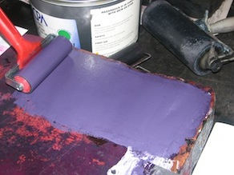
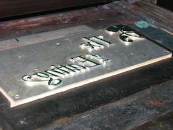
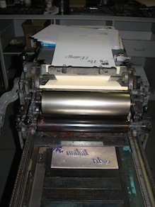
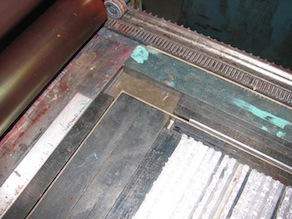

I used an old cylinder proofing press to print. The paper is wrapped around a cylinder to bring it into contact with inked metal. The type stays flat on the galley as the paper is rolled over it. The press also has ink rollers to ink the type before the paper is pressed on it, but I was getting odd results with the motorised inking, and so settled for inking each page by hand.

The colours are meant to be reminiscent of melanzane (aubergine/egg-plant) though without a colour chart it was a bit hit-and-miss.

I printed the title plates first:

Green first, then purple

The type gets locked into place using page ‘furniture’ – typographically sized wooden batons – which are chosen to get the alignment correct.